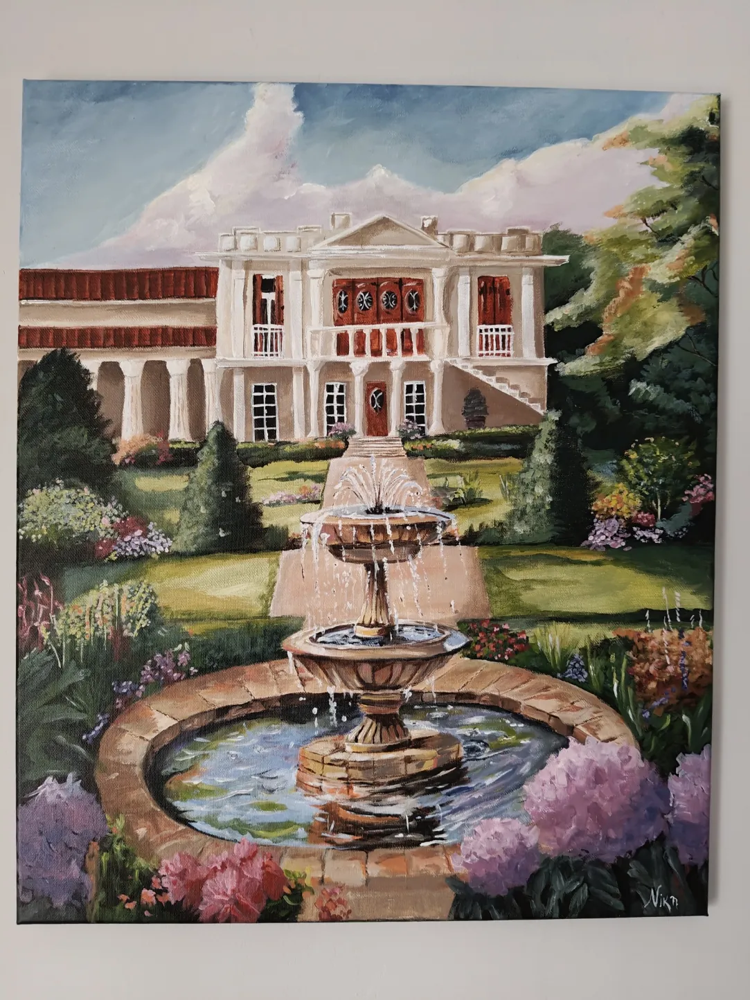

Μικροί πίνακες, πίσω στα μέρη που τους γέννησαν.
Λάδι, ακρυλικό και ακουαρέλα — κυρίως σε καμβάδες τόσο μικρούς που χωράνε σε μια παλάμη. Μετά, κάθε πίνακας βγαίνει ξανά έξω, στη θάλασσα, στον δρόμο ή στο δέντρο απ’ όπου ξεκίνησε, και φωτογραφίζεται εκεί.
Γαλάζιες Σπηλιές, Παξοί — ακουαρέλα, στο σημείο όπου ζωγραφίστηκε

Με υπομονή και όχι τυχαία.
Ένας καμβάς ξεκινά προσεκτικά — το φως μελετημένο από πριν, η προοπτική μετρημένη, το υπομονετικό κομμάτι που στηρίζει όλη την εικόνα.
Τα υπόλοιπα είναι ένστικτο. Ο ορίζοντας μετατοπίζεται. Εμφανίζεται ένα χρώμα που το σκίτσο δεν ζήτησε ποτέ. Αυτό που βγαίνει είναι ήρεμη δουλειά που κρύβει κάτι λίγο ατίθασο — κι από εκεί παίρνει ο πίνακας τον χαρακτήρα του.
Τα θέματα ποικίλλουν: λιμάνια και φάροι, κήποι και παλιά σπίτια, ένα ποτήρι κρασί ένα ζεστό απόγευμα, ένας τοίχος γεμάτος γκράφιτι. Δέχομαι παραγγελίες, οπότε ο επόμενος μπορεί να είναι ο δικός σου.
- Λάδι, ακρυλικό & ακουαρέλα
- Μοναδικά κομμάτια
- Αποστολή σε όλο τον κόσμο
- Δέχομαι παραγγελίες
Μια πρώτη ματιά
Τρεις για αρχή. Οι υπόλοιποι είναι στην γκαλερί.
Κάτι για τον δικό σου τοίχο;
Πες μου το μέρος, το μέγεθος και την αίσθηση που θέλεις να έχει. Θα πάρεις τιμή και ρεαλιστικό χρονοδιάγραμμα πριν ξεκινήσει οτιδήποτε.